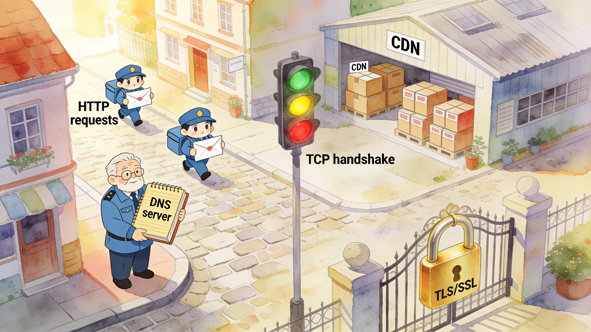
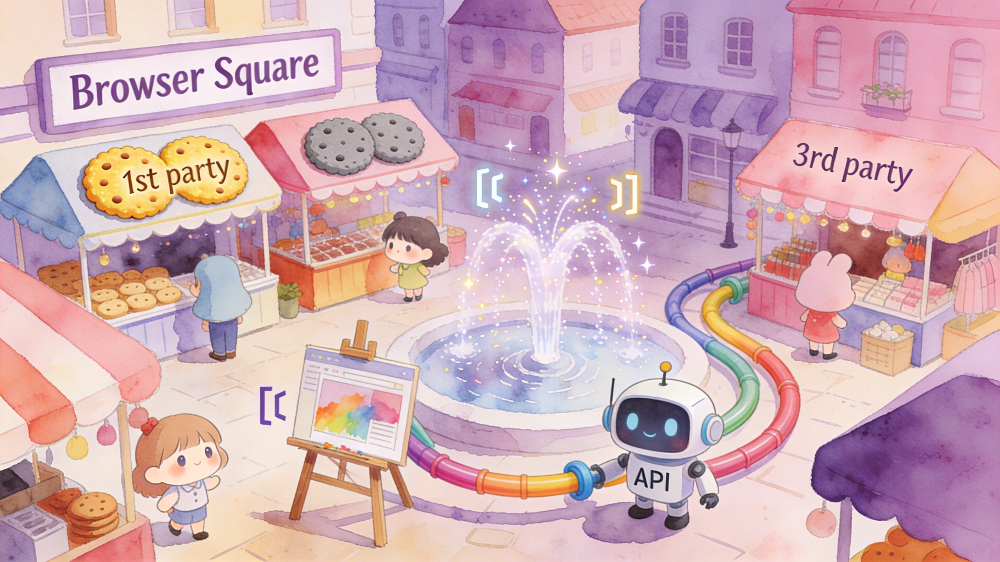
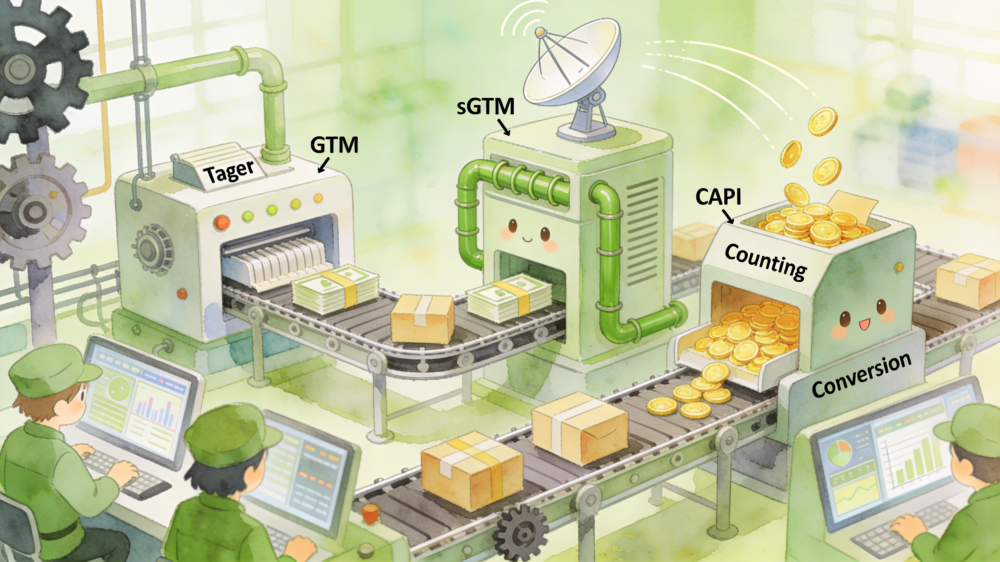

よし子さんが旅で出会った技術用語たちのガイドブック
本編「よし子さんの見えない旅」に登場した専門用語を、
4つの「地区」に分類して図解します。
街のガイドブックをめくるように、気になる用語を探してみてください。

人間が覚えやすいドメイン名（例: example.com）を、コンピュータが理解できるIPアドレス（例: 93.184.216.34）に変換する仕組みです。インターネットの「電話帳」のようなもので、ブラウザでURLを入力するたびに、まずDNSサーバーに「この名前の住所を教えて」と問い合わせが行われます。もしDNSがなければ、私たちはWebサイトごとに数字の羅列を暗記しなければなりません。
インターネットに接続しているすべての機器に割り当てられる「住所番号」です。「192.168.1.1」のような4つの数字の組（IPv4）や、より長い英数字列（IPv6）で表されます。手紙を届けるのに住所が必要なように、データの送受信にはこのIPアドレスが不可欠です。DNSサーバーはドメイン名をこのIPアドレスに変換してくれます。
データを確実に届けるための通信ルールです。通信を始める前に送信側と受信側が「3ウェイハンドシェイク」という3回の確認（SYN → SYN-ACK → ACK）を行い、お互いの準備ができていることを確かめます。まるで大事な荷物を預ける前に「送りますよ？」「受け取れますよ！」「じゃあ送ります！」と確認し合うようなものです。
インターネット上のデータを暗号化し、第三者に盗み見されないようにする技術です。URLが「https://」で始まるサイトはTLSで保護されています。TCPの握手の後に「TLSハンドシェイク」が行われ、暗号化の方法を取り決めます。手紙を「透明な封筒」ではなく「鍵付きの金庫」に入れて送るイメージです。SSLはTLSの旧名称です。
ブラウザとWebサーバーの間でデータをやり取りするための「お手紙のルール」です。ブラウザが「このページを見せて」とリクエストを送り、サーバーが「はいどうぞ」とレスポンスを返す。この一往復が基本です。HTTPSはHTTPにTLS暗号化を加えた安全版で、現在ほとんどのWebサイトがHTTPSを採用しています。
世界各地にサーバーを分散配置し、ユーザーに最も近い場所からコンテンツを届ける仕組みです。東京のユーザーにはアメリカの本社サーバーではなく、東京近郊のCDNサーバーから画像や動画を配信します。コンビニの物流センターが各地にあるおかげで、商品がすぐ届くのと同じ原理です。表示速度の向上とサーバー負荷の分散を両立します。
あるURLにアクセスしたとき、自動的に別のURLへ転送する仕組みです。HTTPステータスコード302は「一時的な移動」を意味し、広告のクリック計測でよく使われます。広告をクリックすると、まず計測用サーバーを経由してからLPに転送される――この「経由」がリダイレクトです。ユーザーには一瞬の出来事ですが、裏ではクリックの記録が刻まれています。

Webサイトがブラウザに保存する小さなテキストデータです。「このユーザーはログイン済み」「カートにはこの商品が入っている」など、サイトがあなたのことを覚えておくための「付箋メモ」のようなもの。1st Party Cookieは訪問中のサイト自身が貼るメモ、3rd Party Cookieは別のサイト（広告配信サーバーなど）が貼るメモです。この3rd Party Cookieの扱いが、現在のプライバシー議論の中心になっています。
サーバーから届いたHTML・CSS・JavaScriptなどのコードを解読し、私たちが目で見て操作できる「画面」に変換する工程です。ブラウザの中にいる「画家」が設計図（HTML）と装飾指示書（CSS）を受け取り、一筆一筆キャンバスに描き上げるイメージです。SafariではWebKitというエンジンがこの仕事を担当しています。
異なるソフトウェア同士が情報をやり取りするための「窓口」です。レストランの注文カウンターに例えると、お客さん（アプリ）がメニュー（API仕様）に沿って注文し、キッチン（サーバー）が料理（データ）を返す。直接キッチンに入らなくても、決まった形式で注文すれば欲しいものが出てきます。Meta CAPIもInstagram Feed APIも、この仕組みで動いています。
コンピュータ同士がデータを受け渡しするときに使う、軽量で読みやすい書式です。「名前: 値」のペアで情報を整理するので、人間にも比較的読みやすいのが特徴。APIのレスポンスやGTMの設定データ、GA4のイベント送信など、Webの世界では至るところで使われている「共通語」です。

Webサイトに埋め込む計測タグ（GA4、Meta Pixelなど）を、HTMLを直接編集せずに管理画面から一括管理できるツールです。「コンテナ」と呼ばれるたった1つのコードをサイトに設置すれば、あとはGTMの管理画面上でタグの追加・編集・削除が自由自在。エンジニアに毎回コード修正を依頼しなくて済む、広告運用者にとっての必須インフラです。
通常のGTMがブラウザ上で動くのに対し、sGTMはクラウドサーバー上で動くタグ管理システムです。自社ドメイン（例: sgtm.client-domain.com）で運用するため、ブラウザから見ると「1st Partyのサーバー」に見え、ITPの制限を回避できます。当社ではStapeがホスティングするGoogle Cloud Run上にデプロイし、Cookie KeeperによるCookie延命やMeta CAPIへの直接送信など、計測精度を守る要として活用しています。
Googleが提供する無料のアクセス解析ツールの最新版です。従来のユニバーサルアナリティクス（UA）が「ページビュー」中心だったのに対し、GA4はすべてのユーザー行動を「イベント」として統一的に記録します。ページ閲覧、ボタンクリック、スクロール、動画再生、フォーム送信――すべてがイベントとしてGA4に届きます。
Meta（Facebook/Instagram）広告のコンバージョンデータを、ブラウザを経由せずサーバーからMetaのサーバーへ直接送信するAPIです。従来のMeta Pixelはブラウザ上で動くため、ITPやATTの影響でデータが欠落しがちでした。CAPIならサーバー間通信なのでCookie制限の影響を受けず、SHA256でハッシュ化したメールアドレスやfbclidと組み合わせることで、高精度なCV計測を実現します。
Meta広告をクリックしたとき、遷移先URLに自動的に付与される長いランダム文字列のパラメータです（例: ?fbclid=AbCdEf123...）。Metaはこの値を使って「どの広告をクリックしたユーザーがCVしたか」を紐づけます。ただしITPによりCookieの有効期限が短縮されるため、当社ではStape Storeにfbclidを保存し、CV時にデータを結合する仕組みで対策しています。
URLに付加する特別なパラメータで、GA4が「このユーザーはどこから来たか」を判別するための荷札です。utm_source（流入元）、utm_medium（媒体種別）、utm_campaign（キャンペーン名）などを設定します。たとえば「?utm_source=instagram&utm_medium=cpc」なら「Instagramの有料広告から来た」とGA4が自動的に分類してくれます。
Webページやアプリの広告枠が表示されるたびに、わずか0.1秒の間にオークション形式で広告主が入札を競い合う仕組みです。よし子さんがInstagramを開いた瞬間、複数の広告主のシステムが「この人に広告を見せたい」と一斉に入札し、最も高い金額を提示した広告が表示されます。Meta広告もこのRTBの仕組みで配信先を決定しています。
ユーザーのプライバシーを守る防壁と、その影響を受けるトラッキング技術。
ITP、同意管理、1st Partyデータ戦略がせめぎ合う最前線。
Apple SafariのWebKitエンジンに搭載されたトラッキング防止機能です。3rd Party Cookieの完全ブロックに加え、JavaScriptで設定した1st Party Cookieの有効期限を最大7日に制限、広告クリック由来のパラメータ（fbclidなど）が付いたCookieは24時間で失効します。日本ではiPhoneユーザーが多いため、この制限が広告計測に深刻な影響を与えており、sGTMやCAPIといった対策技術が生まれるきっかけとなりました。
iOS 14.5以降で導入された、アプリが他社のアプリやWebサイトを横断してユーザーを追跡する前に許可を求める仕組みです。Instagramを開くと「"Instagram"が他社のAppやWebサイトを横断してあなたのアクティビティを追跡することを許可しますか？」というポップアップが出ます。多くのユーザーが「追跡しないように要求」を選ぶため、Meta広告のターゲティング精度とCV計測に大きな影響を与えました。
元のデータから固定長の文字列（ハッシュ値）を生成する一方向の変換関数です。たとえばメールアドレス「yoshiko@example.com」をSHA256に通すと「a1b2c3d4...」のような64文字のランダムな文字列に変わります。重要なのは「元に戻せない」こと。Metaにハッシュ化されたメールを送れば、Meta側も同じハッシュ値と照合してユーザーを特定できますが、第三者がハッシュ値から元のメールアドレスを知ることはできません。
Meta広告マネージャーに表示される、コンバージョンデータの品質スコアです（0〜10点）。CAPIで送信するデータにemail、phone、IPアドレス、User Agent、fbclidなどのパラメータがどれだけ含まれているかで点数が決まります。スコアが高いほどMetaが「広告クリックしたユーザー」と「CVしたユーザー」を正確に紐づけられるため、広告最適化の精度が上がります。当社の目標は8.0以上です。
sGTM内で使えるKey-Value型のデータストアです。広告クリック時のfbclidとユーザーを紐づけて一時保存し、後からCV（コンバージョン）が発生したときにそのデータを取り出して結合する「タイムカプセル」のような役割を果たします。ITPでCookieが短命化しても、サーバー側にデータを保存しているため影響を受けません。これにより、クリックからCVまで時間が空いても正確な計測が可能になります。
sGTM（Stape）が提供するCookie延命機能です。通常、JavaScriptで設定したCookieはITPにより最大7日で失効しますが、Cookie KeeperはHTTPレスポンスヘッダーでCookieを設定（＝サーバーサイドCookie）するため、最大400日間有効にできます。sGTMが自社ドメインで動いていることを活かし、ブラウザには「1st Partyサーバーが設定した正規のCookie」として認識されます。